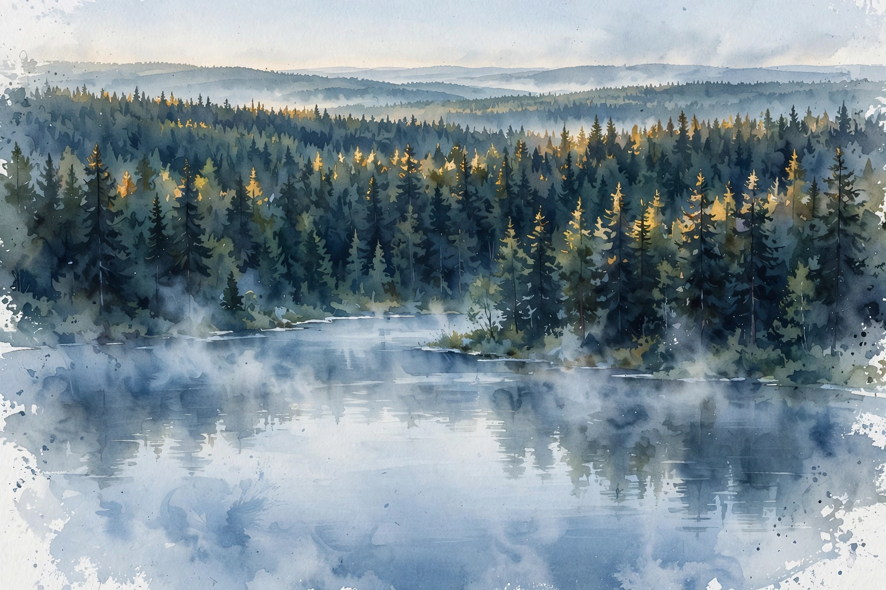
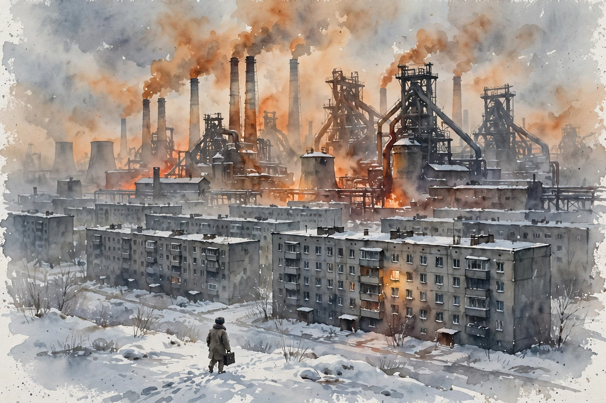

Conversations with Tyler · December 4, 2024
Stephen Kotkin on Stalin, Power, and the Art of Biography
A historian of the Soviet Union on Siberia, Stalin, and the craft of biography. Kotkin explains why power is studied forward, not backward, why censorship also promotes, and why the most important partitions are the ones that never happened.
Stephen Kotkin. Photo: Hoover Institution.
Times marked ~ are proportional estimates from word position. The transcript carries no timestamps.
Index of nuggets
- The honest blank on the map
- Practice is not the same as belief
- Rivers write the history
- Water is the quiet strategic resource
- Agree with the half you can check
- Go to the place
- Palimpsests reward the digger
- Technology cannot fix the politics
- Remoteness starves application
- Warm homes inside a harsh system
- People reject the designed life
- Censorship also promotes
- Radical empathy opens archives
- The despot's taste becomes the canon
- The trip did not cause the decision
- Agency can abolish itself
- Read sources forward, not backward
- Power lives in daily life
- Follow curiosity off the tenure clock
- Count the partitions that never happened
~00:00
Russian Buddhism Today
Source fact Tyler opens away from the expected ground. He asks about the state of Russian Buddhism. Kotkin answers with a historian's candor: he has not been to Russia since January 2020. The pandemic came, then the war. What he can say comes from before that break. There was a lively Buddhist presence in Russia, no longer underground. It predates the Soviet period by a long stretch. The Russian army met Buddhist peoples during its long campaigns in inner Asia.
Interpretation The opening sets the method of the whole episode. Kotkin marks the edge of his knowledge instead of guessing past it. That habit, state the limit, then give what the evidence supports, returns again and again.
Nugget 1 · Honesty
The honest blank on the map
What happened. Asked about Russian Buddhism now, Kotkin said he did not know. He had not been to Russia since January 2020, and the war closed the door.
Why it matters. An expert who admits ignorance protects every claim he does make. The audience can trust the rest because he refused to fake this part.
The principle. Name the boundary of your knowledge before you give the contents. Candor about limits is a credential, not a weakness.
~00:01
Shamanism in Siberia
Source fact Tyler asks how much shamanism survives in Siberia. Kotkin draws a careful line. Culturally, it survives in a significant way. Almost everyone in Siberia of non-European descent has had some cultural exposure to it. But exposure is not belief. The harder question is how many people actually visit shamans for the great life moments, births and deaths. That is tougher to pin down. He traveled to Siberia more than a dozen times, voluntarily, and saw plenty of it himself. Anthropologists did good work gathering and keeping the artifacts, and there are museums. His last visit was about seven or eight years before the episode, and the evidence then said the tradition was still alive.
Nugget 2 · Method
Practice is not the same as belief
What happened. Kotkin split the shamanism question in two. Cultural exposure is wide. Real belief, measured by who seeks a shaman at a birth or a death, is a different and harder question.
Why it matters. Headline claims about a tradition's survival usually confuse the two. The split keeps the analysis honest.
The principle. When you measure a culture, measure behavior at the moments that matter, not just familiarity with the forms.
~00:02
Three Siberias, One Empty Space
Source fact Tyler asks whether Siberia could ever peel away from European Russia on its own, apart from any Chinese move. Kotkin answers: not much is in it for Siberia, and there are not many people there. The space is colossal, and it is far emptier than Canada. Picture Canada with a far less dense population than it has now, with effectively no Toronto, no Montreal, no Vancouver, only provincial cities and thinly populated land between them. Without the connection to European Russia, the challenges of connectivity, governance, and economy would be supreme.
Source fact We treat everything east of the Urals as one unit. Kotkin says it was always three: Western Siberia, Eastern Siberia, and the Russian Far East, distinct in terrain, flora and fauna, and weather. It gets colder as you move east, not only north. The colossal rivers set the living patterns and shaped the history. Lake Baikal is the largest freshwater lake in the world. Kotkin makes a quieter point about resources. Everyone lists coal, oil, gas, and gold for Siberia. Over time, water may prove the most important resource of all. If Himalayan glaciers shrink, the great Asian rivers lose their feed, and Siberian river systems become a supreme strategic resource. Water-starved populations south of the mountains, above all China, could grow far more interested in Siberia's water than in anything else it holds.
Interpretation Tyler tests the thesis with desalination. If water becomes cheap to desalinate, does Siberia become irrelevant? Kotkin concedes the logic but adds the scale problem. Desalination at the scale of Israel is one thing. Israel is a neighborhood inside a Chinese urban agglomeration. Technology changes the game only when it matches the scale of the need.
The three Siberias
Not one empty east, but three historical units, west to east.
Builder's rendering, illustrative. Source: Kotkin's answer on the three historical units, transcript lines ~23-31.

Taiga at dawn. AI-generated watercolor illustration made for this page. Kotkin calls the taiga, dense ancient forest, a wonder, and rejects dull as a description of it.
Nugget 3 · Geography
Rivers write the history
What happened. Kotkin refused the single-unit view of Siberia. Three regions, and inside each, the colossal rivers set where people live and how history moves.
Why it matters. Geography arguments fail when the map is too coarse. The rivers are the fine structure that explains settlement, trade, and strategy.
The principle. When a region looks uniform, find the feature that actually organizes life there. In Siberia it is the rivers.
Nugget 4 · Foresight
Water is the quiet strategic resource
What happened. Everyone prices Siberia by hydrocarbons and metals. Kotkin argued water may matter more over time, as Himalayan glaciers shrink and Asian rivers lose their feed.
Why it matters. The most obvious resource is rarely the decisive one. The boring input, water, can reorder geopolitics while the markets watch oil.
The principle. Ask which input has no substitute at the needed scale. That input, not the flashy one, is the strategic asset.
~00:06
Dull and Poor?
Source fact Tyler quotes the travel writer Colin Thubron, who called Siberia "dull and poor." Kotkin splits the verdict. He agrees with the poor part. He rejects the dull part entirely. Real taiga, dense ancient forest, is a wonder from a purely ecological point of view, canopy to forest floor, everything living and growing there. To call Siberia dull would be almost a criminal label. Then the people, and the rest, on top of that.
Source fact Tyler asks about Siberian butter. Kotkin answers with a wink of history. Yes, it was very good, especially when sold under the Danish label. Russian exiles feasted on Siberian butter in Europe before the revolution, packaged as Danish butter.
Nugget 5 · Judgment
Agree with the half you can check
What happened. Faced with Thubron's two-word verdict, Kotkin accepted poor and fought dull. He walked the taiga himself, so the second word was his to judge.
Why it matters. Blanket verdicts smuggle an unchecked claim inside a true one. Splitting the verdict keeps the true half and tests the rest.
The principle. When someone hands you a compound judgment, score each part separately against what you have actually seen.
~00:08
The Ob River Valley
Source fact Tyler asks how Kotkin became interested in the Ob River Valley. The answer is travel. Kotkin cites G. K. Chesterton's line that "history is really travel." Travel widens the view and teaches you about your own home. In the Ob and Irtysh valleys he found a palimpsest, layers of history not visible and not well known, including a Buddhist layer. A Qing genocide against the Dzungars in inner Asia shaped even the origins of the Dalai Lama as a pan-Buddhist institution. Place names carried the Dzungar prehistory in their etymology, though no visible signs remained, not even cemeteries.
Source fact The layers kept stacking. Agricultural settlement turned the land into farmland. Soviet industrialization built its toxic civilization on top. Planners even schemed to reverse the rivers with nuclear explosions, a scientific lunacy blind to second- and third-order consequences. The region turned out to hold far more history than met the eye, visible only to someone who dug into the sources and traveled the ground.
Nugget 6 · Craft
Go to the place
What happened. Kotkin found the Ob Valley's hidden layers by traveling there, not by reading about it from Princeton. Chesterton's line about history and travel became his working method.
Why it matters. Archives tell you what people wrote. The ground tells you what the archives assumed. Both are needed, and the second is often skipped.
The principle. Before you theorize about a place, stand in it. The questions worth asking often appear only on site.
Nugget 7 · Evidence
Palimpsests reward the digger
What happened. The Buddhist and Dzungar layers of the Ob Valley left no visible monuments. They survived in place names, etymologies, and buried sources.
Why it matters. The absence of visible evidence is not evidence of absence. Erased layers persist in the boring records, names, and land use.
The principle. When the surface looks clean, dig into names and local records. That is where erased history hides.
~00:11
The Science City and the Cybernetics Fantasy
Source fact Tyler asks about Akademgorodok, the Siberian science city. Kotkin reports it is still there, still large, and still important. Asked directly whether it still produces science, he says yes, then qualifies hard. It had triumphs and high-powered institutes, with cybernetics as a big presence. But it no longer has Soviet-era funding, and its remoteness cut it off from manufacturing centers. The surrounding region was old mid-20th-century dirty industry, steel plants on coking coal. Scientific achievement could not translate into a forward-looking productive economy. The science belt had no connection to application, and it fell into a rut.
Source fact Tyler asks why the Soviets were obsessed with cybernetics and AI in the 1960s. Kotkin's answer is blunt: you can never rule out big stupid mistakes. But the deeper reason is structural. Cybernetics promised more efficient ways to gather and use information, which would make the planned economy work. The planned economy was a fantasy from the start, never a reality. In practice it was central control over scarce commodities to prioritize military-industrial output, with the rest left to the black market. Cybernetics offered a way to optimize information from the localities and the organization of it all. It was a fantasy in a different light, and Kotkin says the Chinese Communist Party holds the same fantasy today. When authoritarian politics and a productive economy do not mesh, reach for technology as the escape hatch. Refuse the structural and institutional reforms, and let science and tech substitute for giving up central control and the party monopoly. The scientists themselves were world-class mathematicians, physicists, and computer scientists. For them the work held its own fascination, as it would for scientists anywhere.
Nugget 8 · Power
Technology cannot fix the politics
What happened. The Soviets poured effort into cybernetics so the planned economy could work without structural reform. Kotkin calls it a fantasy, and says the same fantasy drives authoritarian tech bets today.
Why it matters. Every generation rediscovers the hope that better information systems can substitute for better institutions. The hope fails the same way each time.
The principle. When a plan's politics and its economics do not mesh, no technology closes the gap. Fix the institutions first.
Nugget 9 · Economics
Remoteness starves application
What happened. Akademgorodok kept producing science, but its discoveries could not reach factories. The institutes were brilliant and isolated, surrounded by 20th-century heavy industry.
Why it matters. Research without a path to application decays into prestige. The missing link was not talent but connection.
The principle. Judge a research cluster by its distance to application, not by its papers. Brilliance in isolation is a rut.
~00:14
Living in Magnitogorsk
Source fact In the 1980s Kotkin lived in Magnitogorsk in the Urals to research his first book. Tyler asks what was good about living there as an ordinary citizen. Kotkin does not soften the setting. The air was orange. Pollution is too weak a word. It was a one-company, one-industry town with a gigantic integrated steel plant. Pollution controls existed but went unused, because using them lowered output, and pay and bonuses depended on quantitative output. Yet the people were extraordinary. Inside the homes there was a warmth that foreigners find captivating in Slavic cultures. Outside: mismanagement, corruption, unbreathable air, undrinkable water, empty shops. Inside: modest rooms, the warmest people imaginable, and conversation about novels, plays, poetry, science, and the meaning of life, all before the drinking started.

Magnitogorsk in winter. AI-generated watercolor illustration made for this page. The one-company steel town where Kotkin lived in the 1980s under the orange air.
Nugget 10 · Humanity
Warm homes inside a harsh system
What happened. Magnitogorsk was brutal outside the door and warm inside the home. Kotkin found hospitality, culture, and deep conversation in rooms the system never improved.
Why it matters. Systems get judged by their outputs, but people are not outputs. The human layer can be rich where the institutional layer is rotten.
The principle. Never confuse a broken system with broken people. Look inside the homes before you judge the town.
~00:16
Three Phases of Soviet Housing
Source fact Tyler asks whether the utopian urban designs of early Magnitogorsk ever came to fruition. Kotkin says yes, and they are still standing. The regime built a city in European modernism, Bauhaus from Germany, Werkstätte from Austria, spare and elegant, and discovered it was not livable. Families did not want one bathroom down the hall for everyone. They did not want children raised collectively by someone else. They wanted self-contained nuclear family units, with kitchen, toilet, and bath inside their own space. The modernist project was built at scale, and the people in it did not want to live that way.
Source fact The regime changed course. The spare modernist phase of the 1920s and 1930s gave way to Stalinist Baroque family apartments, ornate outside, expensive to build. Then came the Khrushchev five-story prefabricated cement blocks, poorly constructed. Kotkin lived in none of the three. He stayed in the self-contained American cottages built for US and foreign engineers hired to build and launch the steel plant, a plant derived from the Gary, Indiana works. The colony, called the American colony though Italians and Germans lived there too, stood apart from the town for security, to keep the foreigners isolated from the locals and the reverse. He was under 24-hour surveillance the whole time.
Magnitogorsk housing in three phases
Each phase replaced the last. The people rejected the first one outright.
Builder's rendering, illustrative. Source: Kotkin's answer on the three building phases, transcript lines ~87-103.
Nugget 11 · Design
People reject the designed life
What happened. The modernist city was built exactly as designed, and families refused to live in it. They wanted their own kitchens and bathrooms, not efficiency down the hall.
Why it matters. The designers optimized for ideology and elegance. The residents optimized for private family life. The residents won, and the regime had to follow.
The principle. Design for how people actually want to live, not for how they should live. A built utopia that residents reject is a failed design.
~00:20
The Closed City Opens Up
Source fact Magnitogorsk was a closed city, and Tyler asks what the people wanted from the visiting American. The answer was curiosity, pure and simple. They were marinated in propaganda. Kotkin corrects the standard view of censorship. Suppression is only half of it. The other half is promotion, the active spread of certain information and certain ways of thinking. The questions he got sound simple only from the outside. Were workers ever allowed holidays, or were resorts only for the bourgeoisie? Was Ronald Reagan really a dangerous man who wanted war? They wanted children's clothes, medicines in short supply, and someone to carry letters out past the censors. Foreign films had shown them French apartments, stocked shops, oranges and bananas, and they needed to know if any of it was real.
Source fact Trust came slowly, then through two scenes Kotkin still tells. On an observation platform, the mayor and dignitaries showed him the city, proud as could be. Behind them stood what looked like a prison complex. They denied it, red-faced. Kotkin played along, said of course, prisons are only in places like New York, where he was from, and the ice broke. They admitted the prison existed, and the fear of him began to melt. Later they took him to a cemetery commemoration. After the solemn part he asked to walk, and he narrated the lives on the headstones from his archive work. They were astonished. They did not know their own history the way he did. He did not validate Stalinism, the enslavement of the peasantry, or the Gulag. All of that stands condemned. But he showed radical empathy: an effort to understand how people could do these things, who did them, and why.
Source fact The archives opened in stages. At first he could read only newspapers, full local runs that even the great Soviet libraries lacked. He sat with the archivists, five or six women, the only researcher they had ever seen, and showed them discoveries in their own history. They began bringing him material, some of it not strictly approved, and asking his help interpreting it. He visited in 1987 and again in 1989, before the Soviet Union fell in 1991. The local KGB worried an American agent sought to recruit local people. He was not recruiting anyone. He acted on the basis of mutual interest and empathy, and the city, in his phrase, became conquered by him.
Nugget 12 · Media
Censorship also promotes
What happened. Kotkin found the closed city's residents marinated in propaganda, not just starved of facts. Censorship filled their heads with approved stories, not only emptied them.
Why it matters. Removing a censor does not remove the promoted worldview. The positive content of propaganda outlives the ban on alternatives.
The principle. When you analyze an information regime, count what it pushes, not only what it blocks. Promotion is the deeper half of censorship.
Nugget 13 · Trust
Radical empathy opens archives
What happened. Kotkin won Magnitogorsk by respecting its people without validating its system. The cemetery walk, narrating lives from the archives, melted years of suspicion.
Why it matters. Access followed trust, and trust followed demonstrated respect for the people's history. No credential or demand would work.
The principle. To learn from people who fear you, show you know their story better than they do, and judge the system, not them.
~00:33
Stalin and the Artists
Source fact Tyler turns to Stalin and asks whether he understood that Pasternak, Shostakovich, Bulgakov, and Eisenstein were geniuses. Kotkin says yes, Stalin made those judgments. High culture was a mark of advancement for Stalin's generation, what the Germans called Bildung and the Russians called kulturnost. Stalin was predominantly self-educated, seminary rather than gymnasium, but he took the canon seriously, Russian and pan-European. He loved Chekhov most, because Chekhov's villains were credible, full-bodied, believable. As the despot, Stalin was the arbiter of what got distributed, shown, and allowed, so his tastes mattered enormously. The writers did not thrive as they would have in an open society. Yet there is something about cultural production under hothouse despotic conditions that brings out different sides of people.
Source fact Tyler asks why Prokofiev returned in 1936. Was he stupid, or failing in Europe? Kotkin answers with the difference between immigration and exile. Immigrants go voluntarily and want to assimilate. Exiles were kicked out or barely escaped, and they nurse the hope of return. For an exceptional talent, appreciation at home differs from appreciation abroad. Kotkin recalls the film Mephisto, where an actor stays in Nazi Germany and answers the question of why he did not leave: not everybody can emigrate, and for some people the language and the theater are their life. Prokofiev went back to make music for audiences who knew his mastery. He did not fully grasp that the regime was about to descend into the Great Terror of 1936 to 1938. But who did, at the time?
Nugget 14 · Power
The despot's taste becomes the canon
What happened. Stalin judged Bulgakov and Eisenstein superior writers and filmmakers, and as arbiter of Soviet culture his personal taste set what the public could see.
Why it matters. In a despotism, aesthetics is policy. One man's preference for credible villains shaped a civilization's art.
The principle. Where one person controls distribution, study their taste. It is the hidden curriculum of the whole culture.
~00:40
The Trip That Did Not Cause Collectivization
Source fact Tyler raises a hypothesis he credits to James Hughes: Stalin's 1928 trip to Siberia showed him what was wrong with the countryside, and the trip caused the drive to crush the kulaks. Kotkin says no, sadly, it is not true. He has stood in Barnaul where Stalin went. The decision was already reached. The trip was staged to break the party's alliance with the richer peasants. Provincial officials had grown rich through ties to the kulaks, marrying their daughters into kulak families, and Stalin went to deliver a searing, nationally publicized speech that this would not fly anymore.
Source fact The logic was Marxist-Leninist, and the whole party shared it. The base determines the superstructure. With a Communist Party in power and de facto market relations in the countryside, with a quasi-bourgeois class of richer peasants, meaning peasants with more than two cows, either the market base would triumph or the party would have to destroy the base. What the others never imagined was the scale. Voluntary collectivization in 1928 covered 1 percent of arable land, the people who could not farm on their own. To reach 99 percent, the regime had to take people's property and force them into collectives. The Central Committee was skeptical it could be done. Stalin did it, and that shocked them all. In the process he caused famine and risked the party's own rule, and he kept going on the courage of his convictions, settling scores with critics a few years later.
Source fact Then comes the line that defines totalitarianism for Kotkin. Stalin galvanized people's agency, and those people used their agency to destroy their own agency. They took up his call, denounced and disempowered themselves.
From 1 percent to 99 percent
Voluntary collectivization in 1928, then the forced drive. Kotkin's figures.
Real numbers from the transcript. Source: Kotkin on voluntary vs forced collectivization, transcript lines ~193-201.
using your agency to destroy your own agency
Stephen Kotkin · Episode ~00:44
Nugget 15 · Causation
The trip did not cause the decision
What happened. Hughes's hypothesis said the 1928 Siberia trip taught Stalin to crush the kulaks. Kotkin showed the decision predated the trip, which was staged to announce it and break party-kulak ties.
Why it matters. Dramatic trips make tempting causes. The chronology says otherwise: decision first, theater second.
The principle. Test every vivid-cause story against the timeline. If the decision came first, the event was an instrument, not an origin.
Nugget 16 · Power
Agency can abolish itself
What happened. Stalin galvanized the half-educated youth, and they used their own will to force villagers into collectives, disempowering themselves in the act.
Why it matters. Totalitarianism does not only crush people from above. It recruits their energy to dismantle their own freedom.
The principle. Watch for movements that spend your agency to remove your agency. Enthusiasm is not the same as power.
~00:46
No Retrospective Sources
Source fact Tyler asks whether Georgian blood-feud culture shaped Stalin. Kotkin's answer starts with yes, then demolishes the premise. There were a lot of Georgians, and there is one Stalin. People argue he got into nasty schoolyard fights, or his father beat him, and therefore he became what he became. Kotkin's reply is personal. He got into schoolyard fights too, in Englewood, New Jersey, small and bullied, half Catholic and half Jewish at a Catholic school. His father disciplined him with a belt. He did not go on to collectivize agriculture. He is not responsible for the deaths of 18 to 20 million people. You cannot explain Stalin as a phenomenon with those tropes.
Source fact What explains Stalin, in Kotkin's argument, is the experience of getting into power and then exercising it. Building and running the dictatorship, managing Russian power in the world, made Stalin who he was. There is no cultural DNA in the story. And here is his method, the rule that made the biography possible: "I refuse to use sources that were retrospective." A survivor of the terror writes a memoir, remembers the schoolyard, and retrofits the monster into the child. Kotkin worked only with what people said about Stalin in real time, prospectively. That is how he found the six resignations. In the 1920s Stalin resigned as general secretary six times. Three are documented in writing, three rest on solid oral testimony from people who were present. All six times, the colleagues closest to him refused to let him go, because he bore the regime on his shoulders. He later murdered almost all of them. In real time, nobody in the room saw the murderer coming. The personality transformed in symbiosis with the building and running of the dictatorship.
Nugget 17 · Method
Read sources forward, not backward
What happened. Kotkin banned retrospective sources from his biography. Memoirs written after the terror retrofit the monster into the child. He used only what people said in real time.
Why it matters. Hindsight manufactures inevitability. Reading forward recovered the surprise the participants actually lived, including six resignations nobody accepted.
The principle. When you study a life, date every source and discard the backward-looking ones. The past did not know the future.
~00:52
Foucault, de Certeau, and Micropower
Source fact Tyler asks what Kotkin learned from Michel Foucault about power. The story starts at Berkeley, where Kotkin began a PhD in 1981 and finished in 1988. He had come for French history, moved through Habsburg history, and only then switched to Russian and Soviet history, learning the Russian alphabet in his third year. Foucault visited Berkeley in the 1980s, and the 23-year-old Kotkin, baffled by the seminar readings, simply walked up and asked him what the passages meant. Foucault explained patiently. Kotkin became the class coordinator for Foucault's lectures on the truth-teller in ancient Greece, and the lunches and dinners continued. At one lunch Foucault mused that it would be a marvel if someone applied his theories to Stalinism.
Source fact What Kotkin took was the toolkit, not the verdict. Foucault showed him power at the micro level, not the bureaucracy or the secret police, but how power is enforced and acted through daily life. That is why Kotkin says totalitarianism works through people using their own agency against themselves: denunciations of neighbors, the culture of denunciation, the loosening of all social trust, until the only relationship left is dependence on the state. After Foucault died in the summer of 1984, Michel de Certeau gave Kotkin the phrase that became a core idea of his dissertation and then his book Magnetic Mountain: "the little tactics of the habitat," the small daily practices through which power operates. Kotkin never shared Foucault's view that Western daily life was its own form of imprisonment. He adapted the analytical toolkit and aimed it at actual totalitarianism.
The idea of civil society is the opiate of the intellectual class
Michel Foucault, quoted by Stephen Kotkin · Episode ~00:56
Source fact The same French training shaped his method as a historian. He brought the Annales school, Marc Bloch, Lucien Febvre, Fernand Braudel, Pierre Chaunu, total history from the judicial archives, economy and society and culture and politics in one frame, and spliced in the micropower theories of Foucault and de Certeau. His Russian came from Sergei Kasatkin, an emigre of the civil war years, two hours a day, five days a week, in a tiny classroom at Berkeley. He finished in 1988, took his first job at Princeton in 1989, and stayed 33 years.
Nugget 18 · Power
Power lives in daily life
What happened. Foucault taught Kotkin to look past the secret police to the little tactics of the habitat: denunciations, habits, and daily practices that build totalitarian structures from below.
Why it matters. The police cannot be everywhere every minute. What is in people's heads, what behavior they are motivated toward, does the daily work of the regime.
The principle. To understand a power system, study the small daily practices, not only the big institutions. The micro is where the macro is enforced.
~01:08
The Japan Detour
Source fact Tyler asks what Kotkin likes best in Korean art, and the answer opens the strangest chapter of his career. As an untenured assistant professor at Princeton, Kotkin took his sabbatical year and went to Japan for a language boot camp, 18 months, in a school for Asian students bound for Japanese universities. The senior faculty thought he had lost his mind. He was up for tenure at the end of his fifth year. He went anyway. He sat in class with students from Mongolia, Korea, and Hong Kong, then spent afternoons at Tokyo University with the Russianist and Koreanist Wada Haruki. He ended up spending two and a half years in Japan. In Kanazawa he met his wife, a South Korean citizen, a Columbia PhD student writing on how Korean ceramics shaped Japanese ceramics. Through her, a curator, he fell for Korean folk art and furniture, the high-quality pieces that once sat in kitchens and now sit in museum cases.
Interpretation The detour was not a detour. The curiosity that sent a Soviet historian to a Japanese boot camp is the same curiosity that sent him to the Ob Valley and Magnitogorsk. The method is one habit: follow the question to the place.
Nugget 19 · Curiosity
Follow curiosity off the tenure clock
What happened. Up for tenure, Kotkin spent his sabbatical in a Japanese language boot camp that had no visible connection to his work. The senior faculty called it madness.
Why it matters. The detour built the Asian frame that now anchors his third Stalin volume, and it gave him his wife and a second scholarly world. None of it was plannable.
The principle. Protect one curiosity that the career plan cannot justify. The plan optimizes the known path. Curiosity finds the new one.
~01:16
Volume Three and the Four Partitions
Source fact Tyler's last question has two parts: when is the final Stalin volume coming, and what comes after? The delay has two causes. Three separate, unrelated cancers put Kotkin through about 18 months of medical care. Each was caught early, and the surveillance after each one caught the next. The larger cause is the difficulty of the subject. Each volume proved harder than the last. World War II fills half of volume three, and much of what we think we know about Stalin's war lacked solid evidence. Now he is in the Chinese Revolution and the Cold War of 1945 to 1953, and he digs again to verify what actually happened.
Source fact The big discovery of the volume is what Kotkin calls the four partitions: China, Korea, Japan, and Indochina. Two partitions happened, Korea and Indochina, and both led to war. Two did not happen. A partitioned China never happened. The Communists won outright. A partitioned Japan never happened either, though Stalin had already given the order to invade the home islands. The Communists never came near power there. Korea was partitioned because Truman asked Stalin to stop at the 38th parallel, though Truman had no soldiers on the ground to enforce it. Kotkin's argument is that this East Asian story, where so much of the Cold War still reverberates and is arguably not over, never received its proper weight against the familiar European story of Berlin, the blockade, and the Marshall Plan. The volume is called Totalitarian Superpower: the Soviet Union was a superior totalitarianism to Nazism, but an inferior superpower to the United States.
The four partitions
Two happened, both led to war. Two never happened. Kotkin's frame for the Cold War in Asia.
Builder's rendering, illustrative. Source: Kotkin on the four partitions, transcript lines ~335-347.
Source fact What comes after Stalin? Kotkin hopes to get his life back. He spent more than a decade and a half in Stalin's company. From the point of view of power, it was a gift. Stalin is the gold standard: accumulation, operationalization, consequences, no bigger story. From the point of view of morality and freedom, the moral squalor runs bottomless. Kotkin's world is archival, not digital: documents with Stalin's signature on them, and dried blood on the page. Not Stalin's blood. Someone else's, from an interrogation he read and signed off on.
dried blood on the page
Stephen Kotkin · Episode ~01:24
Nugget 20 · History
Count the partitions that never happened
What happened. Kotkin's big Cold War frame rests on two partitions that happened and two that did not. The non-events, China and Japan, matter as much as Korea and Indochina.
Why it matters. History written only from what happened misses the paths not taken. The averted partitions shaped the world as much as the real ones.
The principle. In any analysis, list the outcomes that almost happened. The near-misses carry half the explanation.
~01:26
Watch the Episode
The full episode, embedded from YouTube. The companion above narrates it chapter by chapter.